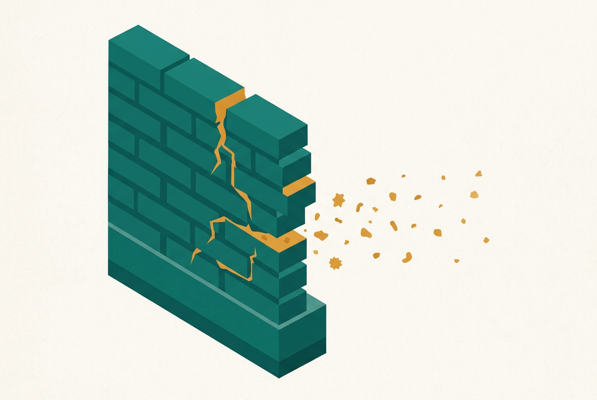
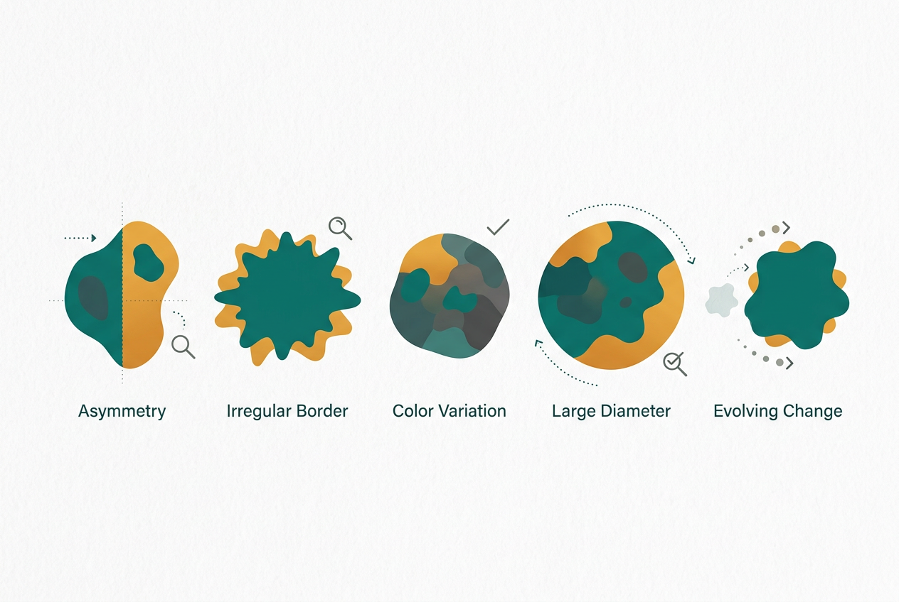

皮肤不是"一层皮"，是一堵会呼吸的墙
是什么：皮肤是人体最大的器官，最外层的角质层像一堵"砖墙"——角质细胞是砖，细胞间脂质是灰浆，共同锁住水分、挡住细菌和刺激物。
为什么重要：绝大多数常见皮肤病（湿疹、脚气、痤疮乱护理后的敏感肌）都有一个共同环节——屏障受损。墙裂了，水分跑出去（干、痒），刺激物和微生物进得来（炎症、感染）。所以皮肤科治疗的第一原则常常不是"抹什么神药"，而是把墙修好：这就是为什么医生总强调"保湿、保湿、还是保湿"。
皮肤是最大的器官，也是最常被"乱治"的器官 —— 每个病种按五问展开：是什么 · 什么原理 · 怎么预防 · 怎么护理 · 何时就医
先懂屏障，再谈治病：大多数皮肤病护理的底层逻辑都是"修墙"
是什么：皮肤是人体最大的器官，最外层的角质层像一堵"砖墙"——角质细胞是砖，细胞间脂质是灰浆，共同锁住水分、挡住细菌和刺激物。
为什么重要：绝大多数常见皮肤病（湿疹、脚气、痤疮乱护理后的敏感肌）都有一个共同环节——屏障受损。墙裂了，水分跑出去（干、痒），刺激物和微生物进得来（炎症、感染）。所以皮肤科治疗的第一原则常常不是"抹什么神药"，而是把墙修好：这就是为什么医生总强调"保湿、保湿、还是保湿"。
"外用保湿润肤剂是特应性皮炎的基础治疗……外用糖皮质激素（TCS）是一线抗炎药物，应根据皮损及部位选择强度分级使用。" —— 中华医学会皮肤性病学分会《中国特应性皮炎诊疗指南（2020版）》
原理：外用糖皮质激素（俗称"激素药膏"）是皮肤科最经典的抗炎药，按效力分为超强效、强效、中效、弱效等级别——级别越高越有效，也越需要严格控制部位和疗程。面部、颈部、皮肤皱褶处只能用弱效并遵医嘱；手掌、足底的厚皮损才可能需要强效。
两个极端都错：一是"激素恐惧"——该用的时候不敢用，孩子湿疹拖成重度、痒到整夜抓挠；二是"激素滥用"——把强效药膏当润肤霜长期大面积涂，或用来治根本不对症的病（比如脚气是真菌感染，涂激素只会"喂养"真菌，越涂越重）。正确姿势：诊断先行、分级选用、足量足疗程、定期复诊，由医生或药师把关。

一种以"痒"为核心的慢性复发性炎症性皮肤病，儿童高发，很多人终身反复
① 是什么问题：湿疹（医学上多指特应性皮炎）是皮肤的慢性炎症，典型表现是成片的红斑、丘疹、脱屑和剧烈瘙痒，常在肘窝、腘窝、面颈部反复出现。可以把它理解为"皮肤的免疫系统过度警觉 + 城墙常年失修"。
② 什么原理：发病是遗传易感性、皮肤屏障功能障碍与免疫异常共同作用的结果。核心恶性循环是"瘙痒-搔抓循环"：痒→抓→屏障进一步破损→炎症加重→更痒。打破循环的关键不是忍，而是"止痒+修墙"双管齐下。
③ 怎么预防（减少复发）：每日足量保湿是基础中的基础——指南给出的用量远超多数人想象：儿童每周至少 100 克、成人每周至少 250 克润肤剂；洗澡水温 32-37℃、时长 5-10 分钟，洗后 3 分钟内涂保湿；寻找并回避自己的诱发因素（干燥、汗液、特定过敏原、刺激性洗剂）。
④ 怎么护理与应对：发作期在医生指导下按分级使用外用抗炎药（糖皮质激素或钙调磷酸酶抑制剂），必要时口服抗组胺药帮助止痒睡眠；中重度反复发作者，现在有生物制剂等系统治疗手段，须由皮肤科医生评估。日常坚持保湿不停药、剪短指甲、穿纯棉宽松衣物。
⑤ 何时必须就医：皮损渗液、结黄痂、周围红肿热痛（提示继发细菌感染）；瘙痒严重影响睡眠和生活；自行用药 1-2 周无改善；婴幼儿面部大面积发作。
严重度分级与阶梯治疗（原则）：中国指南将特应性皮炎分为轻度、中度、重度三级，治疗遵循"阶梯"逻辑——轻度以润肤剂+健康宣教为基础，必要时短期外用弱中效抗炎药；中度规律外用抗炎药（糖皮质激素或钙调磷酸酶抑制剂），控制不佳者由医生评估是否升级系统治疗；重度需要系统治疗（传统免疫抑制剂或生物制剂等，均须专科医生评估、监测）。核心信息只有一句：阶梯的每一步都是医生的决定，患者自己要做的是把"保湿+回避诱因"这两块地基打牢。
复发管理（长期战思维）：特应性皮炎目前不能"断根"，管理目标是"长时间不发作、发作时快速控制"。两个被指南强调的做法：一是润肤剂全年不停——即使皮损完全消退也继续足量保湿，这是减少复发最有证据的措施；二是主动维持治疗——对反复在同一部位发作的患者，医生可能建议在皮损消退后每周固定 2 次在原部位外用抗炎药"巩固"，而不是等复发再救火。此外建议记"湿疹日记"（发作时间、部位、可疑诱因、用药），复诊时带给医生，比口述准确得多。
一种毛囊皮脂腺的慢性炎症——"长大了自然会好"是最大的误解之一
① 是什么问题：痤疮是毛囊皮脂腺单位的慢性炎症性皮肤病，表现为粉刺（黑头/白头）、炎性丘疹、脓疱，重者结节囊肿。国内指南按严重程度分为 4 级：Ⅰ级只有粉刺，Ⅱ级出现炎性丘疹，Ⅲ级出现脓疱，Ⅳ级出现结节囊肿——分级决定治疗路径。
② 什么原理（四个环节）：雄激素驱动皮脂分泌过多 → 毛囊口角化堵塞（油排不出去，形成粉刺）→ 痤疮丙酸杆菌在缺氧富油环境里繁殖 → 引发炎症。四个环节环环相扣，所以正规治疗都是"多环节联合"，单一"消炎"或单一"控油"都容易复发。
③ 怎么预防：规律作息、低糖低奶（高血糖负荷饮食与痤疮相关的证据较充分）、温和清洁（一天两次，别用搓澡巾式洗脸）；但请记住：痤疮主要不是"洗出来的"或"吃辣吃出来的"，清洁过度反而伤屏障。
④ 怎么护理与应对：核心是尽早规范治疗而不是等它自己好——轻中度痤疮以外用药为主（如外用维A酸类、过氧化苯甲酰），中重度需联合口服药（抗生素或异维A酸等），全部属处方或药师指导范畴，务必皮肤科就诊定方案；外用药起效常需 4-8 周，不要因为"用了两周没好"就放弃。不要挤：挤压把炎症推向真皮深层，是痘坑和瘢痕的主要来源。
⑤ 何时必须就医：出现脓疱、结节、囊肿（Ⅲ级以上）；已经开始留痘坑痘印；情绪因痤疮明显受影响；自行护理 2-3 个月无改善。就诊科室：皮肤科。
分级对应的治疗路径（原则，供就诊时理解医生方案）：指南按四级"阶梯"组方——Ⅰ级（粉刺为主）以外用药为起点；Ⅱ级（炎性丘疹）外用联合为主；Ⅲ级（脓疱）通常外用+口服联合；Ⅳ级（结节囊肿）需要更强的系统治疗并考虑防瘢痕策略。所有具体药物都是处方或药师指导范畴，患者不需要也不应该自行"照方抓药"，但理解这个阶梯有助于建立合理预期：越重度的痤疮越要早去正规医院，而不是先在美容院和护肤品上试错。
维持治疗与瘢痕：痤疮控制后不等于结束——指南强调皮损清除后仍需维持治疗（通常以外用药为主，由医生制定时长）来防复发，擅自"见好就停"是复发的常见原因。已经形成的红色痘印多数会随时间淡化；凹陷性痘坑（瘢痕）不会自行消失，须在炎症完全控制后由皮肤科评估修复方案——这也是"早期规范治疗"最实际的意义：防坑永远比填坑容易。
误区一："青春痘不用治，结婚/长大就好了。"——痤疮是慢性炎症性疾病，拖延的代价是永久性瘢痕；指南明确主张早期规范治疗。误区二："长痘是因为脸没洗干净，要多洗、用强力控油。"——过度清洁破坏屏障，可能越洗越糟。误区三："美容院针清/排毒项目能治痘。"——不规范挤压与"排毒"营销是瘢痕与感染的高发来源，治疗请去正规医院皮肤科。
一个来去如风的"过敏信号"，一个赖着不走的"潮湿住客"
① 是什么问题：荨麻疹俗称"风疹块"，表现为大小不一的红色或苍白色风团，来得快、消得也快——单个风团通常 24 小时内自行消退、不留痕迹，但此起彼伏。病程 6 周以内为急性，超过 6 周为慢性。
② 什么原理：皮肤深处的肥大细胞被某种触发因素"引爆"，释放组胺等物质，使局部小血管扩张渗漏——风团本质是"皮肤浅层的水肿"。诱因五花八门：食物、药物、感染、冷热刺激、压力等，也有相当比例查不到明确诱因。
③ 怎么预防：急性发作时留意并记录可疑诱因（新吃的东西、新用的药、感染前驱）；慢性荨麻疹建议在医生指导下寻找和管理诱因，避免已知触发因素。
④ 怎么护理与应对：第二代抗组胺药是一线治疗（具体品种与剂量咨询医生或药师）；冷敷可临时止痒，避免热水烫洗和搔抓。多数急性荨麻疹会自愈，但药物不要"痒了才吃、不痒就停"地随意用，慢性者需要规律疗程。
⑤ 何时必须就医——这是本章最重要的红旗：风团伴随嘴唇/眼睑/喉咙发紧、声音嘶哑、呼吸困难、胸闷、腹痛呕吐、头晕中的任何一条，提示可能发生严重过敏反应（过敏性休克），立即拨打 120，不要观望。单个"风团"持续超过 24 小时不退、疼痛而非瘙痒、消退后留瘀斑，也需就医排查其他疾病。
分型与长期管理：按病程分急性（≤6 周）与慢性（>6 周）；按诱因分自发性（无明确外因，慢性的大多数属于此类）与诱导性（冷、热、压力、划痕、运动等物理因素触发——比如"皮肤划痕症"，划一下起一条风团）。慢性荨麻疹的管理是"规律用药+逐步减停"：医生通常会在症状完全控制后维持一段时间再缓慢减量，而不是痒了吃一片、不痒就断药——后者会让病情反复波动。多数慢性荨麻疹有自限趋势（数月到数年内缓解），规范治疗的意义是把这段时间的生活质量保住。
① 是什么问题：皮肤癣菌感染角质层引起的浅表真菌病：足癣（脚气）痒、脱皮、趾缝糜烂；体癣/股癣是边界清楚的环形红斑，"中间好转、边缘活跃"；甲真菌病（灰指甲）指/趾甲增厚变色。
② 什么原理：皮肤癣菌以角蛋白为食，最喜欢温暖、潮湿、密闭的环境——鞋里、腹股沟、公共浴室地面都是主场。它传染性强：共用拖鞋毛巾、光脚走公共区域都可能中招。
③ 怎么预防：保持足部干燥透气（袜子勤换、鞋子轮换晾晒）、不共用拖鞋毛巾指甲刀、公共浴室泳池穿自己的拖鞋、有脚气先治脚气（它是股癣和灰指甲的"传染源"，医学上叫"两足一手综合征"的源头管理）。
④ 怎么护理与应对：外用抗真菌药（如咪康唑、特比萘芬等通用名药物）是浅表癣病的主力，关键是足疗程——症状消失后仍需按说明书或医嘱继续用够时间，"不痒就停药"是复发的头号原因；灰指甲和反复发作、面积大的癣，外用常不够，需医生评估是否口服抗真菌药（口服药须监测肝功能，务必遵医嘱）。切勿用激素药膏止痒治癣：激素压制炎症却助长真菌，会把癣"喂"成难辨认的顽固型。
⑤ 何时必须就医：红肿热痛加重、流脓、发烧（继发细菌感染）；糖尿病患者的足部任何破损和感染（糖尿病足风险，见第6章）；甲板增厚变形；规范外用 4 周无改善。
足癣的三种面孔（认识分型，处理才不对路）：①趾间型——最常见，趾缝发白、糜烂、脱皮、痒；②水疱型——足底或足缘成簇小水疱，痒明显，不要挑破（挑破=给细菌开门）；③角化过度型——足跟足底皮肤增厚、粗糙、脱屑、冬季皲裂，这一型外用药渗透差、疗程更长，常需要医生评估是否联合口服药。三型可以混合存在。另一个容易被误判的点：脚气"好了"之后趾缝还脱皮是常见的修复过程，但如果单侧手足顽固脱皮增厚，要想到癣的可能而不是简单当作"干燥"——确诊靠医院的真菌镜检，几十分钟出结果，比任何猜测都可靠。
接触性皮炎：皮肤接触到刺激物或致敏物后"就地"发炎——边界常与接触范围一致（表带下、耳环处、腰带区）。分两类：刺激性（洗涤剂、消毒剂、频繁洗手洗掉皮脂屏障，任何人接触够久都会发生）和变应性（镍、染发剂、香精、橡胶等致敏物，只有被致敏的人发作，且延迟 1-2 天才出现）。处理第一位不是药膏而是找出并避开接触物——回忆皮疹出现前 48 小时皮肤碰过什么新东西；急性期在医生指导下短期抗炎，慢性期靠润肤修复屏障。"主妇手"（家务性手部湿疹）是典型：戴手套干活、洗后立即涂润肤霜，比任何药膏都治本。
玫瑰痤疮（俗称"酒糟鼻"，但不只长在鼻子上）：面部中央（鼻、颊、眉间、下巴）阵发性潮红→持续性红斑+毛细血管扩张→丘疹脓疱，可伴灼热刺痛。它不是痤疮、不是过敏、更与"酒糟"无关，是一种慢性炎症性皮肤病，诱因包括日晒、辛辣食物、酒精、过热环境、情绪激动。护理要点：温和清洁+保湿+严格防晒，回避已知诱因；切勿自行长期使用激素药膏——激素会让玫瑰痤疮短期好转、停后爆发性加重（激素依赖性皮炎的常见成因）。规范治疗须皮肤科评估（处方用药，遵医嘱）。
一个"不传染却被误会了一辈子"，一个"疼起来要命但有黄金72小时"
"银屑病是个体与环境相互影响诱发的免疫介导的慢性、复发性、炎症性、系统性疾病，典型临床表现为局限或广泛分布的鳞屑性红斑或斑块，无传染性。" —— 中华医学会皮肤性病学分会《中国银屑病诊疗指南（2023版）》（《中华皮肤科杂志》2023;56(7):573-625）
① 是什么问题：银屑病是免疫介导的慢性炎症性疾病，典型表现是边界清楚的红色斑块上覆银白色鳞屑，好发于肘膝、头皮、腰骶。注意指南的定义里有两个关键词：一是"无传染性"——握手、共餐、拥抱、游泳都不会传染，这条要替患者反复说；二是"系统性疾病"——它不只是皮肤的事，中重度患者常伴随关节炎、心血管疾病、代谢综合征、抑郁等共病，需要整体管理。
② 什么原理：免疫系统错误地"催熟"了表皮细胞——正常角质细胞更新约需 28 天，银屑病皮损处被压缩到 3-5 天，细胞来不及成熟脱落，就堆积成厚厚的鳞屑。遗传易感+环境触发（感染、外伤、压力、吸烟、某些药物）共同点火。"牛皮癣"这个俗称害人不浅：它既不是"癣"（真菌感染，不传染的它被误以为传染），也和"牛"无关，还让无数患者去找"杀癣"的偏方。
③ 怎么预防（减少复发）：无法预防发病，但可减少发作：戒烟限酒、控制体重（肥胖加重病情并影响疗效）、预防链球菌感染（扁桃体炎常是点滴状银屑病的扳机）、管理压力、避免皮肤外伤（同形反应：受伤处冒新皮损）、切勿滥用系统性激素"快速压制"——停药反跳可诱发最凶险的脓疱型。
④ 怎么护理与应对：基础护理同湿疹逻辑——足量润肤剂修复屏障。治疗按严重度分层（指南采用"轻度/中重度"二分法辅助决策）：轻度以外用药为主（维生素D3衍生物、外用糖皮质激素等，联合窄谱UVB光疗）；中重度由专科评估系统治疗，传统药物效果不佳者可考虑生物制剂或小分子药物——近十年银屑病治疗已进入"靶向时代"，治疗目标从"好一点"提高到"皮损基本清除（PASI 90 甚至 100）"。请认准正规医院皮肤科：目前银屑病不可根治，凡承诺"包根治、不复发"的（尤其是来路不明的"祖传药膏"，多违规添加强效激素或重金属）都是骗局。
⑤ 何时必须就医：首次出现疑似皮损（确诊靠皮肤科，必要时病理）；皮损面积扩大或瘙痒疼痛加重；出现关节肿痛晨僵（警惕银屑病关节炎，需尽早风湿/皮肤联合评估，拖延会致关节破坏）；全身弥漫潮红脱屑或密集脓疱伴发热（红皮病型/脓疱型是重症，立即就医）；情绪明显受累——银屑病共病抑郁的比例高，寻求帮助不丢人。
① 是什么问题：带状疱疹是水痘-带状疱疹病毒"复活"引起的感染：小时候得水痘（或隐性感染）后，病毒终身潜伏在脊髓后根神经节里，等免疫力下降（年龄、劳累、疾病、免疫抑制治疗）时沿神经"杀"回皮肤——单侧身体出现条带状排列的簇集水疱，先痛后疹或痛疹同现，疼痛常被描述为烧灼、电击、刀割样。
② 什么原理：病毒沿一条感觉神经的支配区复制扩散，所以皮损严格单侧、不超过身体中线，呈"带状"。真正的麻烦不在皮疹本身（多数人 2-4 周结痂愈合），而在神经损伤：病毒把神经"打伤"后，部分患者皮疹好了疼痛还在，持续超过 1 个月即"带状疱疹后神经痛（PHN）"——年龄越大发生率越高，可痛数月甚至数年，是老年人疼痛门诊的常客。
③ 怎么预防：最有效的措施是疫苗：中国疾控中心科普明确，重组带状疱疹疫苗推荐 50 岁及以上人群接种（2 剂，间隔 2-6 个月），国产减毒活疫苗适用于 40 岁以上（单剂）——具体可及性咨询当地接种门诊（详见第13章·疫苗）。日常层面：规律作息、控制慢性病、避免长期透支——免疫力和病毒之间的"拔河"，你休息好它就安分。
④ 怎么护理与应对——黄金 72 小时：《中国带状疱疹诊疗专家共识（2022版）》强调发疹后 72 小时内尽早启动系统抗病毒治疗（处方药，遵医嘱），能缩短病程、加速愈合、降低 PHN 风险；眼周、耳部受累或免疫低下者即使超过 72 小时仍应治疗。疼痛管理同样重要且常被忽视——共识主张早期充分镇痛（药物由医生选择），"忍痛硬扛"不利于神经修复。皮疹期保持清洁干燥、不挑水疱、穿宽松衣物；水疱液对没得过水痘也没接种过水痘疫苗的人（尤其孕妇、婴儿、免疫低下者）有传染性——传染的后果是让对方得"水痘"而不是带状疱疹，皮疹结痂前避免密切接触这类人群。
⑤ 何时必须就医：疑似带状疱疹（单侧条带疼痛/水疱）立即就诊争取 72 小时窗口，别等；皮疹出现在眼周、鼻尖或耳部（可累及角膜、面神经，处理不及时影响视力听力，属急症优先级）；高热不退、皮损广泛播散（免疫低下者风险）；皮疹愈合后疼痛仍持续（尽早疼痛科/皮肤科评估 PHN）。
"吃药吃出来的皮疹"可能是最凶险的皮肤急症；而身上大多数"疙瘩"其实是良性住户
是什么：药疹是药物通过口服、注射或外用引起的皮肤（可伴黏膜）反应，本质多为免疫介导的超敏反应。任何药物都可能致敏，但临床上最常见的致敏药物类别包括：抗生素（青霉素类、磺胺类、头孢类）、解热镇痛药、抗癫痫药、抗痛风药等。同一药物在不同人身上表现天差地别：从轻微的红斑瘙痒，到荨麻疹样风团，再到重症药疹。
关键认知一：时间差。药疹常不发生在第一次用药当时，而是用药后数天到 1-2 周出现（致敏需要时间），甚至停药后才冒出来——所以"皮疹出现时药已经停了几天"不能排除药疹。就医时告诉医生近一个月内用过的所有药（含中成药、保健品），是诊断的关键信息。
关键认知二：轻重之分。轻症药疹停药+对症处理多可消退；但出现以下重症信号必须立即急诊：皮疹迅速扩大融合、皮肤起疱脱皮、口腔/眼/生殖器黏膜糜烂、高热、面部水肿、淋巴结肿大、精神差——这可能是 Stevens-Johnson 综合征（SJS）、中毒性表皮坏死松解症（TEN）或药物超敏反应综合征（DRESS），死亡率高，需要住院救治。
处理原则：①怀疑药疹，立即停用可疑药物（正在治疗重病的药是否停、怎么停，第一时间联系开药医生，不要自行硬停也不要继续吃）；②牢记并终身回避已确认的致敏药，就诊时主动声明，手机备忘录/病历本上记一笔；③"药物过敏"和"副作用"是两回事，别把普通副作用报成过敏，也别把真过敏说成"体质弱"——前者会让急救时医生用药束手束脚，后者可能致命。
身上摸到"疙瘩"先别慌，绝大多数是良性住户。四类最常见者的画像：
痣（色素痣）：黑色素细胞的良性聚集，几乎人人都有，多数终身无害。要点是"变化的痣才可疑"——自查法则见本章第八节 ABCDE；不要点痣药水、路边激光点痣：反复刺激+无法病理检查，是把良性问题变成大问题的经典路径。可疑痣的正确处理是皮肤科皮肤镜评估、必要时完整切除送病理。
疣：人乳头瘤病毒（HPV）感染表皮引起的良性增生——寻常疣（手上粗糙硬疙瘩）、跖疣（脚底，常被误当鸡眼）、扁平疣（面部手背细小扁平丘疹，青年多见）。有传染性（自身接种：抓挠后沿抓痕冒新疣；也可传染他人），所以不共用毛巾指甲刀、不抠不抓。多数疣可在 1-2 年内自行消退，但数目多、增大快、长在特殊部位的，皮肤科有冷冻等规范处理方式。
皮脂腺囊肿（表皮囊肿）：俗称"粉瘤"，毛囊皮脂腺导管堵塞形成的囊袋，内含豆渣样皮脂，好发于头面、颈背，中央常有一个小黑点（开口）。不痛不痒可观察；一旦红肿疼痛=继发感染，需要就医处理；根治靠完整切除囊壁（门诊小手术），自己挤是最糟选择——挤破囊壁会反复发作且留疤。
脂肪瘤：成熟脂肪细胞构成的软组织良性肿瘤，皮下软软的、可推动、边界清楚、生长极慢，多无痛。观察即可；短期内明显增大、变硬、固定不动、疼痛，或位置特殊（深部），需要就医检查（超声即可初步判断）以排除其他肿物。
一条通用原则：任何皮下肿物，只要出现"短期增大、变硬、固定、破溃、出血、疼痛"六项之一，都值得让医生看一眼——良性肿物和恶性肿物的鉴别，交给皮肤镜、超声和病理，不要交给搜索引擎和美容院。
防晒是性价比最高的"抗皮肤癌+抗衰老"投资；婴幼儿护肤的核心只有"温和"两个字
先分清两种紫外线：UVB（中波）主要作用于表皮，是"晒伤"和皮肤癌的主因；UVA（长波）穿透更深，负责"晒黑"和光老化（皱纹、色斑），且能穿透云层和玻璃——阴天、靠窗坐也要防的主要就是它。WHO 明确：皮肤癌在很大程度上是可以预防的，过度紫外线暴露是明确的致癌因素（2020 年全球约 120 万例非黑素瘤皮肤癌、32.5 万例黑色素瘤与之相关）。
看懂瓶身上的数字：SPF 衡量对 UVB（晒伤）的防护能力，WHO 建议使用 SPF 30 或以上、同时防护 UVA+UVB（广谱）的防晒霜；PA 是日系/国标体系对 UVA 防护的分级（+ 到 ++++，加号越多防护越强）。要泼一盆冷水：SPF 是在实验室"足量涂抹"（约 2mg/cm²，全脸约一枚一元硬币大小）下测出的——多数人实际只涂了 1/4-1/2 量，防护力断崖式下跌。涂够量+每 2 小时补涂（出汗游泳后立即补），比追求高倍数更重要。
官方推荐的防晒"组合拳"（WHO 中文口径）：①紫外线指数（UVI）≥3 时启动防护，避开正午（约10:00-16:00）暴晒；②优先寻找阴凉处；③物理遮蔽在前——长袖衣物、宽檐帽、防紫外线太阳镜（眼睛也要防，见第10章白内障部分）；④裸露部位涂广谱防晒霜（出门前 20-30 分钟涂）；⑤绝不使用日光浴床/人工晒黑设备。物理（无机）防晒剂靠反射散射、化学（有机）防晒剂靠吸收转化，正规产品都安全有效，敏感肌/婴幼儿可优先选物理防晒剂型——"物理防晒优先"针对的是剂型选择，而真正的"物理防晒"第一名永远是衣物和阴凉。
常见误区："阴天不用防晒"——UVA 可穿透云层；"晒不黑就不用防晒"——UVA 的光老化和致癌效应与晒不晒得黑无关；"涂了防晒霜就可以随便晒"——防晒霜是组合拳的最后一环不是免罪符；"晒太阳补维生素D要多晒"——日常户外短时间暴露多数人已足够，无需刻意暴晒（详见第11章骨质疏松部分）。
婴幼儿皮肤角质层薄、屏障功能未成熟，护理的第一原则是做减法：温和清洁+足量保湿+少折腾。三个最常见的问题各有对策：
尿布疹（红屁股）：本质是"潮湿+摩擦+尿便刺激"的接触性皮炎，护理口诀是"勤换、晾干、隔离"——增加换尿布频率、每次清洗后用软布蘸干（不擦）并晾干片刻、涂含氧化锌的护臀膏形成隔离层。默沙东手册的处理要点就一句：让皮肤保持清洁干燥，多数仅靠这些措施即可消退。就医信号：3 天以上无改善、出现卫星状小红点/脓点（可能合并念珠菌感染，需要医生开抗真菌药，护臀膏无效）、水疱、渗液、发热。
婴儿湿疹：特应性皮炎的婴幼儿期表现，多在出生后 2-6 个月起病，面颊、额头、头皮红斑渗液，之后转向四肢屈侧。护理三件事：足量保湿（指南用量：儿童每周至少 100 克润肤剂，洗后 3 分钟内涂）、温和洗浴（32-37℃、5-10 分钟，不用碱性皂基）、规范抗炎（发作期在医生指导下短期使用弱效外用抗炎药——记住：婴儿可用的弱效激素药膏在医生指导下短期使用是安全的，"激素恐惧"导致孩子痒到抓烂、睡眠剥夺、生长发育受影响，代价更大）。避免过热出汗、穿纯棉宽松衣物。多数患儿随年龄增长明显减轻。
痱子：高温潮湿环境下汗腺导管堵塞所致，密集小红疹/小水疱，多见于颈部、腋下、腹股沟。处理核心是"降温+干燥"：开空调降温、减少衣物、温水清洗后晾干，通常几天自愈。不要用痱子粉"扑"在已红的皮肤上（结块摩擦加重刺激，且有吸入风险）；出现脓点（脓痱）或发热就医。
一条家长必知红旗：婴幼儿皮疹若伴随发热+精神萎靡+皮疹按压不褪色（出血点/瘀斑），立即急诊——这可能是严重感染（如脑膜炎球菌血症）的信号，与上述三种"良性皮疹"完全不同，一分钟都不要等。
皮肤上的"小事"什么时候会变"大事"：痣的自查与感染扩散
A（Asymmetry）不对称 · B（Border）边缘不规则 · C（Color）颜色不均 · D（Diameter）直径大于 6 毫米 · E（Evolving）近期发生变化 —— 国际通行的黑色素瘤早期警示法则
身上绝大多数痣是良性的，但黑色素瘤是恶性程度最高的皮肤癌，早发现治愈率很高，晚发现凶险万分。自查口诀 ABCDE：痣的两半不对称、边缘锯齿或模糊、一颗痣里深浅不一或多种颜色、直径超过 6 毫米（铅笔橡皮头大小）、以及最重要的——近几个月在变大、变色、隆起、瘙痒、破溃出血。再加一条"丑小鸭征"：某颗痣和身上其他痣明显长得不一样，也值得警惕。
中国人群的特别提醒：我国黑色素瘤以肢端型为主，好发于手掌、足底、指/趾甲下——这些"晒不到太阳"的部位反而要重点看；甲下出现纵向黑线并蔓延到甲周皮肤，尽早就诊。对可疑的痣，不要去点痣、激光、冷冻或自行抠挖，正确做法是到皮肤科做皮肤镜检查，必要时完整切除活检（详见第12章·癌症早筛）。

"排毒养颜、清血毒治皮肤病"——医学上不存在"血毒"概念，湿疹痤疮都与"排毒"无关，各类排毒产品和灌肠疗法无益且有伤害风险。"纯天然草药膏不含激素，随便抹"——恰恰是违规添加强效激素的重灾区（见效奇快的"三无神膏"要高度警惕），请只使用有正规批准文号的药品。"银屑病（牛皮癣）传染，要隔离"——银屑病是免疫介导的慢性病，不传染，无需回避接触；它目前无法"根治"但可规范控制，凡是承诺"包根治"的广告都不可信，请到正规医院皮肤科治疗。
红旗一：重症药疹（SJS/TEN）。默沙东手册明确，SJS/TEN 通常由药物或感染引起，最常见的致敏药物是磺胺类、抗癫痫药和抗生素。识别口径：用药后 1-3 周内出现"全身皮疹 + 发热 + 口腔/眼睛等黏膜水疱糜烂 + 皮肤疼痛脱皮"——皮肤像被烫伤一样成片剥脱，属于皮肤科最凶险的急症，死亡率高，立即急诊/住院，并带上近期全部用药清单。
红旗二：坏死性皮肤感染。俗称"食肉菌感染"，细菌沿皮下筋膜快速扩散。早期极具欺骗性——看着像普通蜂窝织炎，但有两个特征：①疼痛程度与皮肤表现严重不符（皮肤只是有点红，却痛得死去活来）；②进展极快伴高热、精神萎靡。数小时内皮肤可变为紫暗、起大疱、发黑。这是外科急症，需要紧急清创+静脉抗生素，延误以小时计代价。记住这条铁律："红肿热痛+高热+疼痛远超所见"= 立即急诊，不要在家观察过夜。